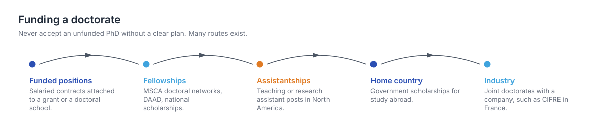

Guides · Careers
Funding your PhD and finding scholarships
Never start a PhD without funding. The kinds of funding that exist, the main national and international programmes, and how to make a scholarship application stand out.

Path · Applying for a PhD abroad · step 5 of 5

A PhD is a job. You should be paid for it, through a salary, a stipend or a scholarship that covers your living costs and tuition for the expected length of the thesis. An unfunded PhD is a serious risk to your health, your finances and your research. This guide lists the main kinds of funding and how to look for them.
Kinds of funding#
- Employment contracts. You are hired as a doctoral researcher with a salary and social benefits. Common in Germany, the Netherlands, the Nordic countries, Switzerland, and France (the doctoral contract).
- Assistantships. A stipend in exchange for teaching (teaching assistant) or research work (research assistant). Standard in the United States and Canada.
- Studentships. A stipend plus tuition attached to a project or a training centre. Standard in the United Kingdom.
- Individual scholarships. You apply yourself, with a project and a host. They are prestigious and make you more attractive to supervisors.
- Supervisor's grants. The supervisor pays you from a research grant, sometimes combined with other sources.
Programmes worth knowing#
The details of each programme change from year to year, so always read the official page before applying.
Europe - Marie Skłodowska-Curie Actions (MSCA) doctoral networks: funded PhD positions in European training networks, open to all nationalities, advertised on EURAXESS. They usually require mobility: you must not have lived in the host country for long in the recent past. - DAAD scholarships for doctoral studies in Germany: monthly stipend, insurance and often a language course, for individual projects or structured programmes. The DAAD website lists the programmes and current deadlines. - France: doctoral contracts (three-year salaried contracts, with competitions organized by doctoral schools, often in spring), CIFRE contracts with a company, and scholarships for international students such as France Excellence Eiffel. Topics are published on ADUM and on doctoral school pages.
Canada - Most PhD students are funded by a combination of the supervisor's grants, teaching assistantships and university awards. Ask about the minimum funding package when you are admitted. - The federal Canada Graduate Research Scholarship – Doctoral (CGRS-D) replaced the Vanier scholarships and the former doctoral scholarships of the three federal research councils. Eligibility rules for international students depend on the council and the year, so read the official page. - Mitacs Globalink Research Internships bring senior undergraduate students from partner countries to Canadian universities for a 12-week research project. Former interns can apply for a Globalink Graduate Fellowship if they return for graduate studies.
United States - Admission to a PhD programme in the sciences usually comes with full funding (tuition waiver and stipend) for several years, through assistantships and fellowships. - External fellowships (for example from national agencies or foundations) are often restricted to citizens or residents. Check before preparing an application.
Your own country Many governments and foundations fund PhDs abroad for their citizens, sometimes with a commitment to return. Ask your university's international office and your ministry of higher education.
Where to search#
- The doctoral school or graduate school page of each target university: it lists internal scholarships and the funding guaranteed to admitted students.
- EURAXESS (funding section), the DAAD database, Campus France, and national research council pages.
- Your professors and alumni of your programme who are now abroad.
Making a scholarship application stand out#
- Start early. Many scholarships close a year before the start of the PhD and need a host's agreement first.
- Follow the evaluation criteria. Most programmes publish them: academic excellence, quality of the project, fit with the host, potential impact. Make sure each criterion is visibly addressed.
- Get a strong host letter. A supervisor who explains why your project fits the group carries a lot of weight.
- Have the file read by someone who has won the same scholarship.
- Apply to several sources at the same time, when the rules allow it.
Warning signs#
- A PhD "position" that asks you to pay a large fee to an agent or to the university for the position itself.
- Funding for one year only, with vague promises for the rest.
- A stipend far below the local cost of living.
Ask about these points in writing before accepting.
Checklist#
- I will not start a PhD without funding for its expected length.
- I know which kind of funding is standard in each target country.
- I have a list of scholarships with deadlines and eligibility rules.
- I have checked the official page of each programme for the current year.
- Each application addresses the published evaluation criteria.
Discussion
Questions, corrections and your own experience are welcome. Comments live in the forum, on GitHub Discussions, with Markdown and LaTeX.